Project Title: Digital media consumption and market trends
Author: Maverick Luke
Date: April 23rd, 2025
Imports and Constants#
import pandas as pd
import numpy as np
import matplotlib.pyplot as plt
import seaborn as sns
import requests
import json
from datetime import datetime, timedelta
from time import sleep
import yfinance as yf
import praw
import re
import statsmodels.api as sm
from scipy.stats import ttest_1samp, ttest_ind, pearsonr, spearmanr
from vaderSentiment.vaderSentiment import SentimentIntensityAnalyzer
import plotly.express as px
# Constants for retrieving data from APIs (not necessary to run the code)
# These constants are used to store the API keys and other sensitive information
with open('tmdb_api_key.txt', 'r') as file:
for line in file:
clean_line = line.strip()
if clean_line:
API_KEY = clean_line # your api key (can be obtained from https://github.com/rickylawson/freekeys/blob/master/index.js)
break
with open('reddit_client.txt', 'r') as file:
lines = file.readlines()
CLIENT_ID = lines[0].strip() # your client id
CLIENT_SECRET = lines[1].strip() # your client secret
USER_AGENT = lines[2].strip() # python:JSC370.project:v1.0 (by /u/YOUR_REDDIT_USERNAME)
---------------------------------------------------------------------------
FileNotFoundError Traceback (most recent call last)
Cell In[2], line 3
1 # Constants for retrieving data from APIs (not necessary to run the code)
2 # These constants are used to store the API keys and other sensitive information
----> 3 with open('tmdb_api_key.txt', 'r') as file:
4 for line in file:
5 clean_line = line.strip()
File ~\AppData\Local\Programs\Python\Python310\lib\site-packages\IPython\core\interactiveshell.py:310, in _modified_open(file, *args, **kwargs)
303 if file in {0, 1, 2}:
304 raise ValueError(
305 f"IPython won't let you open fd={file} by default "
306 "as it is likely to crash IPython. If you know what you are doing, "
307 "you can use builtins' open."
308 )
--> 310 return io_open(file, *args, **kwargs)
FileNotFoundError: [Errno 2] No such file or directory: 'tmdb_api_key.txt'
Introduction#
The streaming media landscape has evolved dramatically in recent years, with platforms like Netflix and Disney+ competing intensely for subscribers. Original content has become a primary differentiator in this competition, with platforms investing billions in developing exclusive shows and movies. Meanwhile, social media platforms like Reddit serve as immediate indicators of audience reception, potentially signaling a release’s success or failure. This intersection of streaming content strategies and social media engagement raises an important question for investors: How do major content releases on these platforms affect their stock market performance, and can social media metrics serve as leading indicators for these market movements?
Research Question#
This project addresses the question: How do major streaming content releases on Netflix and Disney+ affect their respective stock prices in the short term, and does social media engagement correlate with these market movements?
Specifically, we analyze:
Whether stock prices show abnormal returns in the 3-day window following content releases
Whether Reddit engagement metrics correlate with stock price movements
Is the sentiment of Reddit comments about a movie (positive/negative) associated with upward/downward movement in stock price?
Is there a lagged relationship between Reddit engagement and provider stock returns (e.g., 1-day, 3-day, 7-day lag)?
Methods#
The study combines data from three distinct sources to examine relationships between streaming content releases, stock market performance, and social media engagement:
Streaming Content Data: The Movie Database (TMDB) API was used to collect information about Netflix and Disney+ releases, including release dates, popularity scores, and genres. Both TV shows and movies were included to ensure a sufficient sample size.
Stock Market Data: Financial data for Netflix (NFLX), Disney (DIS), and the S&P 500 index was collected using the Yahoo Finance API via the Python yfinance package. Daily closing prices, trading volume, and other metrics were gathered for the period from September 2024 to March 2025.
Social Media Engagement Data: Reddit’s API was accessed using the Python praw library to collect post and comment data related to each content release. Data was collected from relevant subreddits including r/television, r/netflix, r/DisneyPlus, r/streaming.
API Implementation#
(Skip to Read existing CSV files if the dataframes are available in CSVs) \
The following code demonstrates how data was collected from each API source: (Note that the API calls take some time and requires API keys (for TMDB) and client id and client secret (for Reddit praw). To improve efficiency, I’ve saved the datasets as CSV files for quicker retrieval. The retrieval code is located right below the API calls functions)
# Function to get the top releases for a given streaming provider
# The function fetches the top TV shows released on the specified streaming platform
def get_top_releases(provider_id, start_date, end_date, api_key = API_KEY):
base_url_tv = "https://api.themoviedb.org/3/tv/popular"
base_url_movie = "https://api.themoviedb.org/3/movie/popular"
tv_results = []
movie_results = []
page_tv = 1
page_movie = 1
max_page = 30
while True:
params_tv = {
'api_key': api_key,
'with_watch_providers': provider_id,
'watch_region': 'US',
'first_air_date.gte': start_date,
'first_air_date.lte': end_date,
'sort_by': 'popularity.desc',
'page': page_tv
}
params_movie = {
'api_key': api_key,
'with_watch_providers': provider_id,
'watch_region': 'US',
'primary_release_date.gte': start_date,
'primary_release_date.lte': end_date,
'sort_by': 'popularity.desc',
'page': page_movie
}
if page_tv < max_page:
response_tv = requests.get(base_url_tv, params_tv)
data = response_tv.json()
if 'results' in data:
tv_results.extend(data['results'])
page_tv += 1
if page_movie < max_page:
response_movie = requests.get(base_url_movie, params_movie)
data = response_movie.json()
if 'results' in data:
movie_results.extend(data['results'])
page_movie += 1
if page_tv >= max_page and page_movie >= max_page:
break
sleep(0.5)
for item in tv_results:
item['provider'] = 'Netflix' if provider_id == 8 else 'Disney+'
item['provider_id'] = provider_id
item['content-type'] = 'TV Show'
for item in movie_results:
item['provider'] = 'Netflix' if provider_id == 8 else 'Disney+'
item['provider_id'] = provider_id
item['first_air_date'] = item['release_date']
item['name'] = item['title']
item['content-type'] = 'Movie'
return tv_results, movie_results
def get_all_genre_info():
genre_tv_url = f"https://api.themoviedb.org/3/genre/tv/list"
genre_movie_url = f"https://api.themoviedb.org/3/genre/movie/list"
params = {
'api_key': API_KEY
}
response_tv = requests.get(genre_tv_url, params)
response_movie = requests.get(genre_movie_url, params)
data_tv = response_tv.json()
data_movie = response_movie.json()
all_genres = data_tv['genres'] + data_movie['genres']
all_genres_dict = {genre['id']: genre['name'] for genre in all_genres}
return all_genres_dict
# Function to get genre information for a given genre ID
# The function returns a list of genre names for the given genre IDs
def get_genre_info(genre_ids, genres_dict):
genres = []
for genre_id in genre_ids:
genre_name = genres_dict.get(genre_id)
if genre_name:
genres.append(genre_name)
return genres
# Get genre information for TV shows and movies
all_genres_dict = get_all_genre_info()
all_genres = list(all_genres_dict.values())
# Fetch top releases for Netflix and Disney+ from 2000 to now
start_date = "2000-01-01"
end_date = str(datetime.now().strftime("%Y-%m-%d"))
netflix_releases_tv, netflix_releases_movie = get_top_releases(8, start_date, end_date) # 8 is the ID for Netflix
disney_releases_tv, disney_releases_movie = get_top_releases(337, start_date, end_date) # 337 is the ID for Disney+
# Combine the results into a single DataFrame
releases_df_tv = pd.DataFrame(netflix_releases_tv + disney_releases_tv)
releases_df_movie = pd.DataFrame(netflix_releases_movie + disney_releases_movie)
releases_df = pd.concat([releases_df_tv, releases_df_movie], ignore_index=True)
# Add genre information to the DataFrame
for genre in all_genres_dict.keys():
releases_df[all_genres_dict[genre]] = releases_df['genre_ids'].apply(lambda x: 1 if genre in x else 0)
releases_df = releases_df[[
'id', 'name', 'first_air_date', 'popularity',
'vote_average', 'vote_count', 'provider', 'provider_id', 'content-type'] + list(all_genres_dict.values())]
releases_df['release_date'] = pd.to_datetime(releases_df['first_air_date'])
releases_df['ticker'] = releases_df['provider'].map({
'Netflix': 'NFLX',
'Disney+': 'DIS'
})
# Filter the DataFrame based on popularity and vote count to get the top releases
min_popularity = 30
min_votes = 1000
print("Before filtering:")
print(f"Number of releases: {len(releases_df)}")
print(f"Date range: {releases_df['release_date'].min()} to {releases_df['release_date'].max()}")
print(f"Top 5 releases:\n{releases_df.head()}")
print("After filtering:")
releases_df = releases_df[
(releases_df["popularity"] > min_popularity) &
(releases_df["vote_count"] > min_votes)
]
print(f"Number of releases: {len(releases_df)}")
print(f"Date range: {releases_df['release_date'].min()} to {releases_df['release_date'].max()}")
print(f"Top 5 releases:\n{releases_df.head()}")
Before filtering:
Number of releases: 2320
Date range: 1933-07-13 00:00:00 to 2025-11-05 00:00:00
Top 5 releases:
id name first_air_date popularity \
0 13945 Gute Zeiten, schlechte Zeiten 1992-05-11 705.3679
1 2261 The Tonight Show Starring Johnny Carson 1962-10-01 584.9169
2 45789 Sturm der Liebe 2005-09-26 574.8943
3 22980 Watch What Happens Live with Andy Cohen 2009-07-16 521.1378
4 63770 The Late Show with Stephen Colbert 2015-09-08 503.1590
vote_average vote_count provider provider_id content-type \
0 5.784 37 Netflix 8 TV Show
1 7.474 77 Netflix 8 TV Show
2 6.044 34 Netflix 8 TV Show
3 5.000 63 Netflix 8 TV Show
4 6.400 301 Netflix 8 TV Show
Action & Adventure ... History Horror Music Romance Science Fiction \
0 0 ... 0 0 0 0 0
1 0 ... 0 0 0 0 0
2 0 ... 0 0 0 0 0
3 0 ... 0 0 0 0 0
4 0 ... 0 0 0 0 0
TV Movie Thriller War release_date ticker
0 0 0 0 1992-05-11 NFLX
1 0 0 0 1962-10-01 NFLX
2 0 0 0 2005-09-26 NFLX
3 0 0 0 2009-07-16 NFLX
4 0 0 0 2015-09-08 NFLX
[5 rows x 38 columns]
After filtering:
Number of releases: 410
Date range: 1946-12-20 00:00:00 to 2025-03-07 00:00:00
Top 5 releases:
id name first_air_date popularity \
7 100088 The Last of Us 2023-01-15 451.8147
14 2734 Law & Order: Special Victims Unit 1999-09-20 388.4450
29 1416 Grey's Anatomy 2005-03-27 281.2538
42 79744 The Rookie 2018-10-16 228.0813
60 60735 The Flash 2014-10-07 195.6986
vote_average vote_count provider provider_id content-type \
7 8.581 5700 Netflix 8 TV Show
14 7.939 3919 Netflix 8 TV Show
29 8.228 10468 Netflix 8 TV Show
42 8.516 2390 Netflix 8 TV Show
60 7.773 11262 Netflix 8 TV Show
Action & Adventure ... History Horror Music Romance Science Fiction \
7 0 ... 0 0 0 0 0
14 0 ... 0 0 0 0 0
29 0 ... 0 0 0 0 0
42 0 ... 0 0 0 0 0
60 0 ... 0 0 0 0 0
TV Movie Thriller War release_date ticker
7 0 0 0 2023-01-15 NFLX
14 0 0 0 1999-09-20 NFLX
29 0 0 0 2005-03-27 NFLX
42 0 0 0 2018-10-16 NFLX
60 0 0 0 2014-10-07 NFLX
[5 rows x 38 columns]
# Function to get the stock data for the specified tickers and date range
# The function fetches the stock data for the specified tickers from Yahoo Finance
def get_stock_data(tickers, start_date, end_date):
# Add buffer to start and end dates
start_buffer = (pd.to_datetime(start_date) - timedelta(days=14)).strftime('%Y-%m-%d')
end_buffer = (pd.to_datetime(end_date) + timedelta(days=14)).strftime('%Y-%m-%d')
data = yf.download(tickers, start=start_buffer, end=end_buffer, auto_adjust=False)
# Stack the column indices to create a single level of column labels
df = data.stack(level=1).reset_index()
df.columns = ['Date', 'Ticker', 'Adj Close', 'Close', 'High', 'Low', 'Open', 'Volume']
df = df.sort_values(['Ticker', 'Date'])
# Calculate daily returns for each stock (in percentage)
df['Daily_Return'] = df.groupby('Ticker')['Adj Close'].pct_change() * 100
return df
tickers = ['NFLX', 'DIS', '^GSPC'] # Netflix, Disney, and S&P 500
start_date = start_date
end_date = end_date
stock_data = get_stock_data(tickers, start_date, end_date)
# Replace the ticker symbol for S&P 500 with 'SPY'
stock_data.loc[stock_data['Ticker'] == '^GSPC', 'Ticker'] = 'SPY'
[*********************100%***********************] 3 of 3 completed
# Calculate abnormal returns for each release
def calculate_abnormal_returns(releases, stock_data):
results = []
for _, release in releases.iterrows():
ticker = release['ticker']
release_date = release['release_date']
start_date = release_date
# Use a 3-day window after the release date to minimize noise
end_date = release_date + timedelta(days=3)
# Get stock data for this window
stock_window = stock_data[
(stock_data['Ticker'] == ticker) &
(stock_data['Date'] >= start_date) &
(stock_data['Date'] <= end_date)
]
# Get market data (S&P 500) for the same window
market_window = stock_data[
(stock_data['Ticker'] == 'SPY') &
(stock_data['Date'] >= start_date) &
(stock_data['Date'] <= end_date)
]
if len(stock_window) > 0 and len(market_window) > 0:
# Calculate cumulative returns
if len(stock_window) > 1:
# Use first and last prices
first_price = stock_window.iloc[0]['Adj Close']
last_price = stock_window.iloc[-1]['Adj Close']
stock_return = (last_price - first_price) / first_price * 100
else:
stock_return = stock_window.iloc[0]['Daily_Return']
if len(market_window) > 1:
first_market = market_window.iloc[0]['Adj Close']
last_market = market_window.iloc[-1]['Adj Close']
market_return = (last_market - first_market) / first_market * 100
else:
market_return = market_window.iloc[0]['Daily_Return']
abnormal_return = stock_return - market_return
result = release.copy()
result['stock_return'] = stock_return
result['market_return'] = market_return
result['abnormal_return'] = abnormal_return
results.append(result)
return pd.DataFrame(results)
# Change the date to the correct format
releases_df['release_date'] = pd.to_datetime(releases_df['release_date'])
stock_data['Date'] = pd.to_datetime(stock_data['Date'])
returns_df = calculate_abnormal_returns(releases_df, stock_data)
# Function to retrieve engagement data from Reddit for a given movie title and release date
# The function searches for posts related to the movie on specific subreddits
# Caution: This function makes multiple requests to the Reddit API and may take some time to run
def get_reddit_engagement(title, release_date, reddit_client, is_movie=True, is_netflix=True, comment_limit=10):
if not isinstance(release_date, datetime):
release_date = pd.to_datetime(release_date)
start_date = release_date - timedelta(days=14)
end_date = release_date + timedelta(days=14)
search_queries = [
f'{title} discussion',
]
# Remove subtitle from the title (if present)
clean_title = re.sub(r'[:\-–—].*$', '', title).strip()
if clean_title != title:
search_queries.append(f'"{clean_title}"')
subreddits = []
if is_movie:
subreddits.append('movies')
else:
subreddits.append('television')
if is_netflix:
subreddits.append('netflix')
subreddits.append('NetflixBestOf')
else:
subreddits.append('DisneyPlus')
all_posts = []
for subreddit_name in subreddits:
subreddit = reddit_client.subreddit(subreddit_name)
for search_query in search_queries:
# Search for posts in the subreddit
after_date = int(start_date.timestamp())
before_date = int(end_date.timestamp())
for post in subreddit.search(search_query, sort='relevance', limit=300, params={'after': after_date, 'before': before_date}):
post_date = datetime.fromtimestamp(post.created_utc)
if (start_date <= post_date <= end_date and
title.lower() in post.title.lower()):
submission = post
submission.comments.replace_more(limit=0)
top_comments = [{
"body": comment.body,
"controversiality": getattr(comment, "controversiality", 0)
} for comment in submission.comments[:comment_limit]]
all_posts.append({
'title': post.title,
'subreddit': subreddit_name,
'date': post_date,
'score': post.score,
'num_comments': post.num_comments,
'upvote_ratio': post.upvote_ratio,
'post_id': post.id,
'post_url': post.url,
'top_comments': top_comments,
'text': getattr(post, "selftext", ""),
})
return all_posts
analyzer = SentimentIntensityAnalyzer()
# Function to summarize engagement data from Reddit posts
# The function calculates various sentiment metrics based on the posts and comments
def get_reddit_engagement_summary(all_posts,
alpha=1.0,
beta=1.0,
gamma=1.0,
delta=1.0,
x=1.0,
y=1.0,
z=1.0,
include_engagement_score=True,
num_comments=10):
# Initialize variables to store scores and metrics
# all_scores: List to store all sentiment scores
# weighted_scores: List to store weighted sentiment scores
# engagement_scores: List to store engagement scores
# controversial_count: Counter for the number of controversial comments
all_scores = []
weighted_scores = []
engagement_scores = []
controversial_count = 0
has_engagement = False
if len(all_posts) > 0:
has_engagement = True
for post in all_posts:
post_text = f"{post.get('title', '')} {post.get('text', '')}"
post_sentiment = analyzer.polarity_scores(post_text)["compound"]
# Base metrics
score = post.get("score", 0)
upvote_ratio = post.get("upvote_ratio", 0.5)
num_comments = post.get("num_comments", 0)
# Normalize metrics
# Using log1p to avoid issues with zero values
score_norm = np.log1p(score)
comments_norm = np.log1p(num_comments)
# Weighted sentiment for post
w_post = post_sentiment * (1 + alpha * (score_norm) + beta * upvote_ratio + gamma * (comments_norm))
all_scores.append(post_sentiment)
weighted_scores.append(w_post)
# Analyze top comments
for comment in post.get("top_comments", []):
text = comment.get("body", "")
if not text.strip():
continue
sentiment = analyzer.polarity_scores(text)["compound"]
w_comment = sentiment * (1 + alpha * (score_norm) + beta * upvote_ratio + gamma * (comments_norm))
all_scores.append(sentiment)
weighted_scores.append(w_comment)
controversial_count += comment.get("controversiality", 0)
# Calculate engagement score
if include_engagement_score:
engagement_score = (
x * score_norm +
y * comments_norm +
z * upvote_ratio
)
engagement_scores.append(engagement_score)
summary = {
"has_engagement": has_engagement,
"n_texts": len(all_scores),
"avg_sentiment": np.mean(all_scores) if all_scores else np.nan,
"std_sentiment": np.std(all_scores) if all_scores else np.nan,
"min_sentiment": np.min(all_scores) if all_scores else np.nan,
"max_sentiment": np.max(all_scores) if all_scores else np.nan,
"avg_weighted_sentiment": np.mean(weighted_scores) if weighted_scores else np.nan,
"max_weighted_sentiment": np.max(weighted_scores) if weighted_scores else np.nan,
}
expected_total_comments = len(all_posts) * num_comments
controversial_norm = controversial_count / expected_total_comments if expected_total_comments > 0 else 0
if include_engagement_score:
summary["engagement_score"] = round(np.sum(engagement_scores) + delta * controversial_norm, 3) if engagement_scores else np.nan
return summary
reddit = praw.Reddit(
client_id=CLIENT_ID,
client_secret=CLIENT_SECRET,
user_agent=USER_AGENT
)
engagement_data = []
minimal_posts = []
# releases_df_sample = releases_df.sample(min(30, len(releases_df)), random_state=100)
for index, row in releases_df.iterrows():
title = row['name']
release_date = row['release_date']
is_movie = row['content-type'] == 'Movie'
is_netflix = row['provider'] == 'Netflix'
engagement = get_reddit_engagement(title, release_date, reddit, is_movie, is_netflix)
minimal_posts.extend([{
"name": title,
"release_date": release_date,
"post_id": post["post_id"],
"title": post["title"],
"subreddit": post["subreddit"],
"url": post["post_url"]
} for post in engagement])
engagement_summary = get_reddit_engagement_summary(engagement)
engagement_summary["name"] = title
engagement_summary["release_date"] = release_date
engagement_data.append(engagement_summary)
sleep(2)
engagement_df = pd.DataFrame(engagement_data)
minimal_posts_df = pd.DataFrame(minimal_posts)
print(engagement_df.head())
# Summary of engagement data
print("Engagement Data Summary:")
print(engagement_df.describe())
print("Release Data Summary:")
print(releases_df.describe())
has_engagement n_texts avg_sentiment std_sentiment min_sentiment \
0 True 38 0.240595 0.525079 -0.8442
1 False 0 NaN NaN NaN
2 False 0 NaN NaN NaN
3 True 11 0.245573 0.531898 -0.7906
4 True 11 0.327118 0.467909 -0.5271
max_sentiment avg_weighted_sentiment max_weighted_sentiment \
0 0.9906 2.198142 16.388170
1 NaN NaN NaN
2 NaN NaN NaN
3 0.8807 2.550323 9.146249
4 0.9649 3.891714 11.479383
engagement_score name release_date
0 41.623 The Last of Us 2023-01-15
1 0.000 Law & Order: Special Victims Unit 1999-09-20
2 0.000 Grey's Anatomy 2005-03-27
3 9.385 The Rookie 2018-10-16
4 10.897 The Flash 2014-10-07
Engagement Data Summary:
n_texts avg_sentiment std_sentiment min_sentiment max_sentiment \
count 410.000000 185.000000 185.000000 185.000000 185.000000
mean 22.868293 0.165588 0.527095 -0.815312 0.929378
std 45.291743 0.190671 0.085897 0.247913 0.110835
min 0.000000 -0.563358 0.230730 -0.999900 0.361200
25% 0.000000 0.064827 0.490240 -0.971500 0.897900
50% 0.000000 0.166509 0.531898 -0.889200 0.973500
75% 20.000000 0.285767 0.573069 -0.787700 0.997200
max 281.000000 0.567145 0.715923 0.000000 0.999800
avg_weighted_sentiment max_weighted_sentiment engagement_score
count 185.000000 185.000000 410.000000
mean 2.047261 13.837712 27.802634
std 2.442166 4.361663 56.196662
min -7.060490 1.979586 0.000000
25% 0.824807 11.248216 0.000000
50% 2.029675 14.468988 0.000000
75% 3.513409 16.759867 23.964250
max 8.098685 21.747903 347.905000
Release Data Summary:
id popularity vote_average vote_count provider_id \
count 4.100000e+02 410.000000 410.000000 410.000000 410.000000
mean 2.239948e+05 84.410629 7.661332 7576.521951 172.500000
std 3.243610e+05 57.161458 0.733704 7701.313922 164.700977
min 1.100000e+01 30.307000 5.359000 1005.000000 8.000000
25% 1.981000e+03 41.796600 7.184000 2250.000000 8.000000
50% 4.889100e+04 74.702200 7.779000 4165.000000 172.500000
75% 3.398460e+05 105.767800 8.239000 10621.000000 337.000000
max 1.241982e+06 451.814700 8.924000 37003.000000 337.000000
Action & Adventure Animation Comedy Crime Documentary \
count 410.000000 410.000000 410.000000 410.000000 410.0
mean 0.126829 0.136585 0.253659 0.185366 0.0
std 0.333188 0.343829 0.435636 0.389069 0.0
min 0.000000 0.000000 0.000000 0.000000 0.0
25% 0.000000 0.000000 0.000000 0.000000 0.0
50% 0.000000 0.000000 0.000000 0.000000 0.0
75% 0.000000 0.000000 1.000000 0.000000 0.0
max 1.000000 1.000000 1.000000 1.000000 0.0
... Adventure Fantasy History Horror Music \
count ... 410.000000 410.000000 410.000000 410.000000 410.000000
mean ... 0.248780 0.087805 0.024390 0.063415 0.004878
std ... 0.432834 0.283357 0.154446 0.244005 0.069758
min ... 0.000000 0.000000 0.000000 0.000000 0.000000
25% ... 0.000000 0.000000 0.000000 0.000000 0.000000
50% ... 0.000000 0.000000 0.000000 0.000000 0.000000
75% ... 0.000000 0.000000 0.000000 0.000000 0.000000
max ... 1.000000 1.000000 1.000000 1.000000 1.000000
Romance Science Fiction TV Movie Thriller War
count 410.000000 410.000000 410.0 410.000000 410.000000
mean 0.053659 0.219512 0.0 0.112195 0.009756
std 0.225618 0.414422 0.0 0.315992 0.098410
min 0.000000 0.000000 0.0 0.000000 0.000000
25% 0.000000 0.000000 0.0 0.000000 0.000000
50% 0.000000 0.000000 0.0 0.000000 0.000000
75% 0.000000 0.000000 0.0 0.000000 0.000000
max 1.000000 1.000000 0.0 1.000000 1.000000
[8 rows x 32 columns]
Content Data Preprocessing#
The data structures for TV shows and movies were standardized to ensure consistency. For TV shows, the field first_air_date was renamed to release_date to align with the naming convention used for movies. Additionally, a content_type field was introduced to clearly distinguish between movies and TV shows, making it easier to organize the data. This standardization simplifies comparisons and ensures a unified format across different types of content. Genre information is retrieved and one-hot encoded to enable analysis by genre. Retrieved releases are sorted by popularity and filtered to include only those with at least 1000 votes.
Stock Data Preprocessing#
In the stock data preprocessing phase, two key calculations were performed to analyze stock performance: return calculation and market adjustment. First, daily returns were computed as the percentage change in the adjusted closing price from the previous day, providing insight into short-term price movements. To isolate company-specific movements from broader market trends, abnormal returns were calculated. This was achieved by subtracting the market return (represented by the S&P 500 index as the benchmark) from the stock return. The formula used was: abnormal_return = stock_return - market_return. Finally, event windows were defined to examine the impact of content releases on stock performance. A 3-day post-release window (from the release day to two days after) was specifically analyzed to capture short-term stock reactions to the release of new content.
Data Integration#
The processed datasets were merged based on content title and release date. The final integrated dataset included the following key variables:
Content information: title, release date, platform, popularity, genre, content type
Stock performance: abnormal returns across different time windows
Social media engagement: average sentiment, weighted sentiment, engagement score
Tools and Libraries Used#
The analysis was conducted using the following Python libraries:
Data Collection: requests, yfinance, praw
Data Processing: pandas, numpy
Sentiment analysis: VADER
Time Series Handling: datetime
Visualization: matplotlib, seaborn
We save each dataset into csv files so that anytime we need the data, we can just read from them.
# Saving the data to a CSV file for convenience
releases_df.to_csv('data/top_releases.csv', index=False)
stock_data.to_csv('data/stock_data.csv', index=False)
returns_df.to_csv('data/abnormal_returns.csv', index=False)
engagement_df.to_csv('data/reddit_engagement.csv', index=False)
minimal_posts_df.to_csv('data/reddit_engagement_minimal.csv', index=False)
Read existing CSV files#
# Read the data from the CSV files (not necessary to run the code if the data is already available)
releases_df = pd.read_csv('data/top_releases.csv')
stock_data = pd.read_csv('data/stock_data.csv')
returns_df = pd.read_csv('data/abnormal_returns.csv')
engagement_df = pd.read_csv('data/reddit_engagement.csv')
minimal_posts_df = pd.read_csv('data/reddit_engagement_minimal.csv')
all_genres = list(releases_df.columns[9:-2])
Exploratory Data Analysis#
# Exploratory Data Analysis
release_df_summary = releases_df.describe()
stock_data_summary = stock_data.describe()
returns_df_summary = returns_df.describe()
engagement_df_summary = engagement_df.describe()
print("Releases Data:")
display(release_df_summary)
print("Stock Data:")
display(stock_data_summary)
print("Abnormal Returns Data:")
display(returns_df_summary)
print("Reddit Engagement Data:")
display(engagement_df_summary)
release_df_summary.to_csv('summary/release_df_summary.csv', index=False)
stock_data_summary.to_csv('summary/stock_data_summary.csv', index=False)
returns_df_summary.to_csv('summary/returns_df_summary.csv', index=False)
engagement_df_summary.to_csv('summary/engagement_df_summary.csv', index=False)
Releases Data:
| id | popularity | vote_average | vote_count | provider_id | Action & Adventure | Animation | Comedy | Crime | Documentary | ... | Adventure | Fantasy | History | Horror | Music | Romance | Science Fiction | TV Movie | Thriller | War | |
|---|---|---|---|---|---|---|---|---|---|---|---|---|---|---|---|---|---|---|---|---|---|
| count | 4.100000e+02 | 410.000000 | 410.000000 | 410.000000 | 410.000000 | 410.000000 | 410.000000 | 410.000000 | 410.000000 | 410.0 | ... | 410.000000 | 410.000000 | 410.000000 | 410.000000 | 410.000000 | 410.000000 | 410.000000 | 410.0 | 410.000000 | 410.000000 |
| mean | 2.239948e+05 | 84.410629 | 7.661332 | 7576.521951 | 172.500000 | 0.126829 | 0.136585 | 0.253659 | 0.185366 | 0.0 | ... | 0.248780 | 0.087805 | 0.024390 | 0.063415 | 0.004878 | 0.053659 | 0.219512 | 0.0 | 0.112195 | 0.009756 |
| std | 3.243610e+05 | 57.161458 | 0.733704 | 7701.313922 | 164.700977 | 0.333188 | 0.343829 | 0.435636 | 0.389069 | 0.0 | ... | 0.432834 | 0.283357 | 0.154446 | 0.244005 | 0.069758 | 0.225618 | 0.414422 | 0.0 | 0.315992 | 0.098410 |
| min | 1.100000e+01 | 30.307000 | 5.359000 | 1005.000000 | 8.000000 | 0.000000 | 0.000000 | 0.000000 | 0.000000 | 0.0 | ... | 0.000000 | 0.000000 | 0.000000 | 0.000000 | 0.000000 | 0.000000 | 0.000000 | 0.0 | 0.000000 | 0.000000 |
| 25% | 1.981000e+03 | 41.796600 | 7.184000 | 2250.000000 | 8.000000 | 0.000000 | 0.000000 | 0.000000 | 0.000000 | 0.0 | ... | 0.000000 | 0.000000 | 0.000000 | 0.000000 | 0.000000 | 0.000000 | 0.000000 | 0.0 | 0.000000 | 0.000000 |
| 50% | 4.889100e+04 | 74.702200 | 7.779000 | 4165.000000 | 172.500000 | 0.000000 | 0.000000 | 0.000000 | 0.000000 | 0.0 | ... | 0.000000 | 0.000000 | 0.000000 | 0.000000 | 0.000000 | 0.000000 | 0.000000 | 0.0 | 0.000000 | 0.000000 |
| 75% | 3.398460e+05 | 105.767800 | 8.239000 | 10621.000000 | 337.000000 | 0.000000 | 0.000000 | 1.000000 | 0.000000 | 0.0 | ... | 0.000000 | 0.000000 | 0.000000 | 0.000000 | 0.000000 | 0.000000 | 0.000000 | 0.0 | 0.000000 | 0.000000 |
| max | 1.241982e+06 | 451.814700 | 8.924000 | 37003.000000 | 337.000000 | 1.000000 | 1.000000 | 1.000000 | 1.000000 | 0.0 | ... | 1.000000 | 1.000000 | 1.000000 | 1.000000 | 1.000000 | 1.000000 | 1.000000 | 0.0 | 1.000000 | 1.000000 |
8 rows × 32 columns
Stock Data:
| Adj Close | Close | High | Low | Open | Volume | Daily_Return | |
|---|---|---|---|---|---|---|---|
| count | 18521.000000 | 18521.000000 | 18521.000000 | 18521.000000 | 18521.000000 | 1.852100e+04 | 18518.000000 |
| mean | 816.149174 | 817.689592 | 822.894792 | 811.895670 | 817.573579 | 1.167638e+09 | 0.080040 |
| std | 1241.425702 | 1240.483257 | 1246.889287 | 1233.193557 | 1240.305614 | 1.821799e+09 | 2.364787 |
| min | 0.372857 | 0.372857 | 0.410714 | 0.346429 | 0.377857 | 2.856000e+05 | -40.906466 |
| 25% | 27.137035 | 31.770000 | 32.238819 | 31.360001 | 31.840000 | 7.346700e+06 | -0.831609 |
| 50% | 116.214333 | 117.849998 | 119.160004 | 116.500000 | 117.940002 | 1.397410e+07 | 0.046546 |
| 75% | 1229.010010 | 1229.010010 | 1236.709961 | 1221.130005 | 1229.030029 | 2.457850e+09 | 0.912945 |
| max | 6144.149902 | 6144.149902 | 6147.430176 | 6111.149902 | 6134.500000 | 1.145623e+10 | 42.223510 |
Abnormal Returns Data:
| id | popularity | vote_average | vote_count | provider_id | Action & Adventure | Animation | Comedy | Crime | Documentary | ... | Horror | Music | Romance | Science Fiction | TV Movie | Thriller | War | stock_return | market_return | abnormal_return | |
|---|---|---|---|---|---|---|---|---|---|---|---|---|---|---|---|---|---|---|---|---|---|
| count | 3.130000e+02 | 313.000000 | 313.000000 | 313.000000 | 313.000000 | 313.000000 | 313.000000 | 313.000000 | 313.000000 | 313.0 | ... | 313.000000 | 313.0 | 313.000000 | 313.000000 | 313.0 | 313.000000 | 313.000000 | 313.000000 | 313.000000 | 313.000000 |
| mean | 2.923244e+05 | 87.163949 | 7.579236 | 7025.367412 | 177.230032 | 0.140575 | 0.140575 | 0.230032 | 0.178914 | 0.0 | ... | 0.044728 | 0.0 | 0.057508 | 0.255591 | 0.0 | 0.121406 | 0.006390 | 0.268379 | 0.094682 | 0.173697 |
| std | 3.436532e+05 | 56.462701 | 0.736468 | 7151.996407 | 164.695284 | 0.348139 | 0.348139 | 0.421527 | 0.383894 | 0.0 | ... | 0.207038 | 0.0 | 0.233183 | 0.436891 | 0.0 | 0.327121 | 0.079808 | 4.032321 | 1.555017 | 3.594273 |
| min | 9.800000e+01 | 30.307000 | 5.897000 | 1005.000000 | 8.000000 | 0.000000 | 0.000000 | 0.000000 | 0.000000 | 0.0 | ... | 0.000000 | 0.0 | 0.000000 | 0.000000 | 0.0 | 0.000000 | 0.000000 | -33.187476 | -3.851784 | -32.215538 |
| 25% | 3.113200e+04 | 43.478100 | 7.084000 | 2271.000000 | 8.000000 | 0.000000 | 0.000000 | 0.000000 | 0.000000 | 0.0 | ... | 0.000000 | 0.0 | 0.000000 | 0.000000 | 0.0 | 0.000000 | 0.000000 | -1.353291 | -0.544035 | -1.109943 |
| 50% | 1.000880e+05 | 76.644800 | 7.622000 | 3738.000000 | 337.000000 | 0.000000 | 0.000000 | 0.000000 | 0.000000 | 0.0 | ... | 0.000000 | 0.0 | 0.000000 | 0.000000 | 0.0 | 0.000000 | 0.000000 | 0.167576 | 0.244318 | 0.082475 |
| 75% | 4.260630e+05 | 113.067000 | 8.213000 | 10455.000000 | 337.000000 | 0.000000 | 0.000000 | 0.000000 | 0.000000 | 0.0 | ... | 0.000000 | 0.0 | 0.000000 | 1.000000 | 0.0 | 0.000000 | 0.000000 | 1.535817 | 0.882694 | 1.094830 |
| max | 1.241982e+06 | 451.814700 | 8.924000 | 37003.000000 | 337.000000 | 1.000000 | 1.000000 | 1.000000 | 1.000000 | 0.0 | ... | 1.000000 | 0.0 | 1.000000 | 1.000000 | 0.0 | 1.000000 | 1.000000 | 17.339448 | 10.969204 | 16.866286 |
8 rows × 35 columns
Reddit Engagement Data:
| n_texts | avg_sentiment | std_sentiment | min_sentiment | max_sentiment | avg_weighted_sentiment | max_weighted_sentiment | engagement_score | |
|---|---|---|---|---|---|---|---|---|
| count | 410.000000 | 185.000000 | 185.000000 | 185.000000 | 185.000000 | 185.000000 | 185.000000 | 185.000000 |
| mean | 22.868293 | 0.165588 | 0.527095 | -0.815312 | 0.929378 | 2.047261 | 13.837712 | 61.616649 |
| std | 45.291743 | 0.190671 | 0.085897 | 0.247913 | 0.110835 | 2.442166 | 4.361663 | 70.178338 |
| min | 0.000000 | -0.563358 | 0.230730 | -0.999900 | 0.361200 | -7.060490 | 1.979586 | 1.786000 |
| 25% | 0.000000 | 0.064827 | 0.490240 | -0.971500 | 0.897900 | 0.824807 | 11.248216 | 14.337000 |
| 50% | 0.000000 | 0.166509 | 0.531898 | -0.889200 | 0.973500 | 2.029675 | 14.468988 | 27.841000 |
| 75% | 20.000000 | 0.285767 | 0.573069 | -0.787700 | 0.997200 | 3.513409 | 16.759867 | 96.300000 |
| max | 281.000000 | 0.567145 | 0.715923 | 0.000000 | 0.999800 | 8.098685 | 21.747903 | 347.905000 |
# Remove the rows with null values in the stock data
clean_stock_data = stock_data.dropna()
Daily return calculations require both the current and previous day’s adjusted close values. Each of our 3 tickers has one row where the previous day’s data is unavailable, resulting in a null value for the daily return on that specific row. This is an expected consequence of our finite dataset rather than an error in the data.
# Merge returns_df and engagement_df on the 'title' and 'release_date' columns
merged_data = pd.merge(returns_df, engagement_df, on=['name', 'release_date'], how='inner')
# Select only the relevant columns
merged_data = merged_data.drop(columns=['id', 'first_air_date', 'provider_id'])
merged_data_summary = merged_data.describe()
print("Summary Statistics for the Merged Dataset:")
display(merged_data_summary)
# Histograms for the numerical columns in the merged dataset
plt.figure(figsize=(16, 12))
plt.suptitle('Histograms of Continuous Variables', fontsize=20)
n_cols = 3
n_rows = 3
numerical_cols = ['popularity', 'vote_average', 'vote_count', 'stock_return',
'market_return', 'abnormal_return',
'avg_sentiment', 'avg_weighted_sentiment', 'engagement_score']
for i, col in enumerate(numerical_cols):
plt.subplot(n_rows, n_cols, i + 1)
sns.histplot(merged_data[col], kde=True)
plt.title(f'{col} Histogram')
plt.axvline(merged_data[col].mean(), color='red', linestyle='dashed', linewidth=1, label=f'Mean: {merged_data[col].mean():.2f}')
plt.axvline(merged_data[col].median(), color='green', linestyle='dashed', linewidth=1, label=f'Median: {merged_data[col].median():.2f}')
plt.tight_layout()
plt.show()
Summary Statistics for the Merged Dataset:
| popularity | vote_average | vote_count | Action & Adventure | Animation | Comedy | Crime | Documentary | Drama | Family | ... | market_return | abnormal_return | n_texts | avg_sentiment | std_sentiment | min_sentiment | max_sentiment | avg_weighted_sentiment | max_weighted_sentiment | engagement_score | |
|---|---|---|---|---|---|---|---|---|---|---|---|---|---|---|---|---|---|---|---|---|---|
| count | 674.000000 | 674.000000 | 674.000000 | 674.000000 | 674.000000 | 674.000000 | 674.000000 | 674.0 | 674.000000 | 674.000000 | ... | 674.000000 | 674.000000 | 674.000000 | 402.000000 | 402.000000 | 402.000000 | 402.000000 | 402.000000 | 402.000000 | 402.000000 |
| mean | 86.432187 | 7.576312 | 6829.899110 | 0.142433 | 0.142433 | 0.237389 | 0.166172 | 0.0 | 0.489614 | 0.109792 | ... | 0.023808 | 0.166941 | 29.768546 | 0.160945 | 0.526995 | -0.809369 | 0.929708 | 1.989392 | 13.830509 | 60.627413 |
| std | 54.921773 | 0.738511 | 6998.357379 | 0.349753 | 0.349753 | 0.425798 | 0.372512 | 0.0 | 0.500263 | 0.312863 | ... | 1.616655 | 3.602336 | 48.717213 | 0.183941 | 0.082469 | 0.239856 | 0.106989 | 2.352762 | 4.321260 | 68.570619 |
| min | 30.307000 | 5.897000 | 1005.000000 | 0.000000 | 0.000000 | 0.000000 | 0.000000 | 0.0 | 0.000000 | 0.000000 | ... | -3.851784 | -32.215538 | 0.000000 | -0.563358 | 0.230730 | -0.999900 | 0.361200 | -7.060490 | 1.979586 | 1.786000 |
| 25% | 43.037400 | 7.100000 | 2268.000000 | 0.000000 | 0.000000 | 0.000000 | 0.000000 | 0.0 | 0.000000 | 0.000000 | ... | -0.556584 | -1.109943 | 0.000000 | 0.064827 | 0.492285 | -0.968400 | 0.897700 | 0.825811 | 11.248216 | 14.337000 |
| 50% | 77.385200 | 7.622000 | 3593.000000 | 0.000000 | 0.000000 | 0.000000 | 0.000000 | 0.0 | 0.000000 | 0.000000 | ... | 0.161317 | 0.036463 | 11.000000 | 0.164914 | 0.531898 | -0.883400 | 0.971700 | 1.923941 | 14.392607 | 27.841000 |
| 75% | 110.676900 | 8.210000 | 10325.000000 | 0.000000 | 0.000000 | 0.000000 | 0.000000 | 0.0 | 1.000000 | 0.000000 | ... | 0.880174 | 1.060075 | 38.000000 | 0.264431 | 0.569507 | -0.757900 | 0.997200 | 3.368389 | 16.759867 | 96.300000 |
| max | 451.814700 | 8.924000 | 37003.000000 | 1.000000 | 1.000000 | 1.000000 | 1.000000 | 0.0 | 1.000000 | 1.000000 | ... | 10.969204 | 16.866286 | 281.000000 | 0.567145 | 0.715923 | 0.000000 | 0.999800 | 8.098685 | 21.747903 | 347.905000 |
8 rows × 41 columns
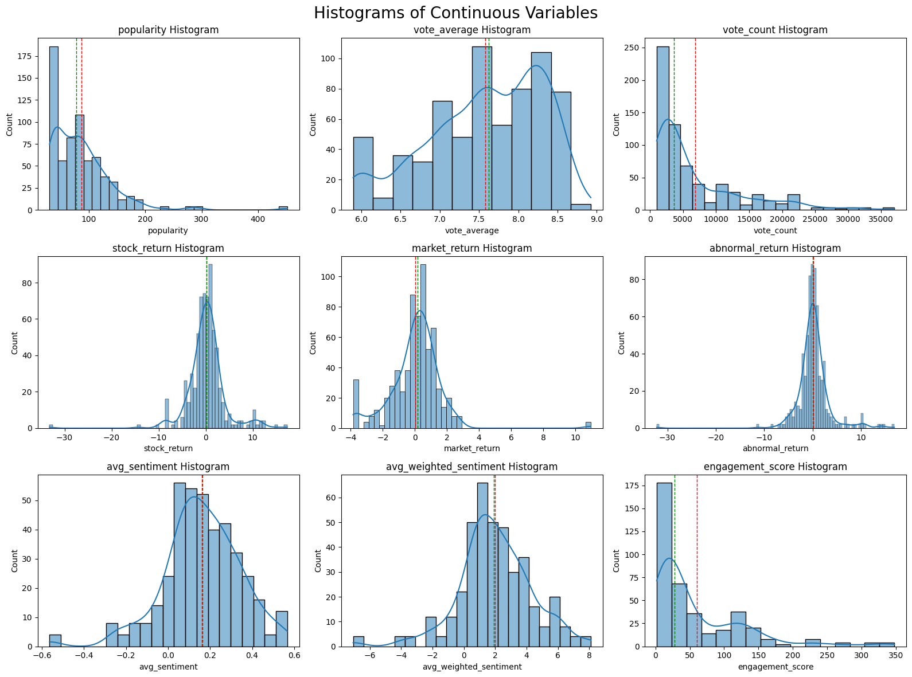
The histograms of the continuous variables reveal several key patterns in their distributions. Most variables—such as popularity, vote_count, engagement_score, and the return-based metrics—exhibit strong right-skewness. In contrast, vote_average, avg_sentiment, and avg_weighted_sentiment appear more symmetrically distributed, with avg_sentiment closely resembling a normal distribution centered around a slightly positive value. Return variables (stock_return, market_return, and abnormal_return) cluster tightly around zero. Overall, the distributions highlight a landscape dominated by a few highly impactful data points against a backdrop of more modest, frequent observations.
# Plot count of genres in the dataset
plt.figure(figsize=(10, 6))
genre_counts = merged_data[all_genres].sum().sort_values(ascending=False)
sns.barplot(x=genre_counts.index, y=genre_counts.values)
plt.title('Genre Frequency in Movie Collection')
plt.xticks(rotation=45, ha='right')
plt.xlabel('Genre')
plt.tight_layout()
plt.show()
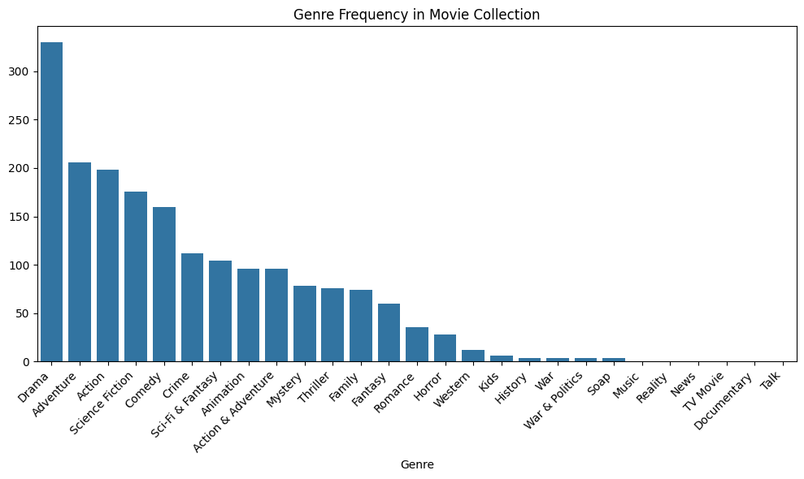
fig = px.bar(
x=genre_counts.index,
y=genre_counts.values,
labels={'x':'Genre','y':'Count'},
title='Genre Frequency in Movie Collection'
)
fig.update_layout(xaxis_tickangle=45)
fig.show()
The bar chart above displays the frequency distribution of genres across a movie collection, with Drama being the most prevalent genre, followed by Adventure and Action.
abnormal_returns = returns_df['abnormal_return'].dropna()
# Plot the distribution
plt.figure(figsize=(8,5))
sns.histplot(abnormal_returns, kde=True, bins=20, edgecolor='black')
plt.axvline(0, color='red', linestyle='--')
plt.title('Distribution of Abnormal Returns (3-day window)')
plt.xlabel('Abnormal Return (%)')
plt.ylabel('Frequency')
plt.grid(True)
plt.show()
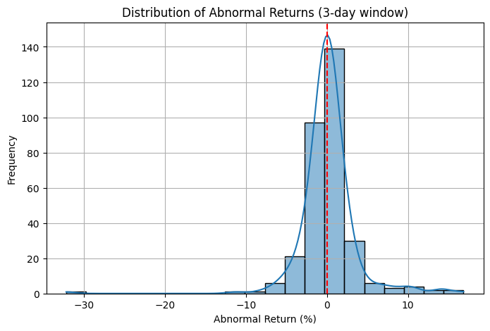
fig = px.histogram(
abnormal_returns,
nbins=20,
marginal='rug',
title='Distribution of 3-Day Abnormal Returns',
labels={'value':'Abnormal Return (%)'}
)
fig.add_vline(x=0, line_dash='dash', line_color='red')
fig.show()
# One-sample t-test for abnormal returns
# Test if the mean abnormal return is significantly different from zero
t_stat, p_value = ttest_1samp(abnormal_returns, popmean=0)
print("One-sample t-test for abnormal returns:")
print(f"T-statistic: {t_stat:.4f}")
print(f"P-value: {p_value:.4f}")
One-sample t-test for abnormal returns:
T-statistic: 0.8550
P-value: 0.3932
Based on the figure and the t-test results (t-statistic = 0.855, p-value = 0.393), we fail to reject the null hypothesis. This indicates that the mean abnormal return does not differ significantly from zero. This addresses our first subquestion: there is no statistically significant stock movement, on average, in the 3-day window following a major streaming release.
n_rows = 1
n_cols = 2
# Boxplot of Abnormal Returns by Streaming Platform
plt.figure(figsize=(12, 6))
plt.subplot(n_rows, n_cols, 1)
sns.boxplot(x='provider', y='abnormal_return', data=merged_data)
plt.title('Abnormal Returns by Streaming Platform')
# Boxplot of Abnormal Returns by Content Type
plt.subplot(n_rows, n_cols, 2)
sns.boxplot(x='content-type', y='abnormal_return', data=merged_data)
plt.title('Abnormal Returns by Content Type')
plt.xlabel('Content Type')
plt.ylabel('3-Day Abnormal Return (%)')
Text(0, 0.5, '3-Day Abnormal Return (%)')
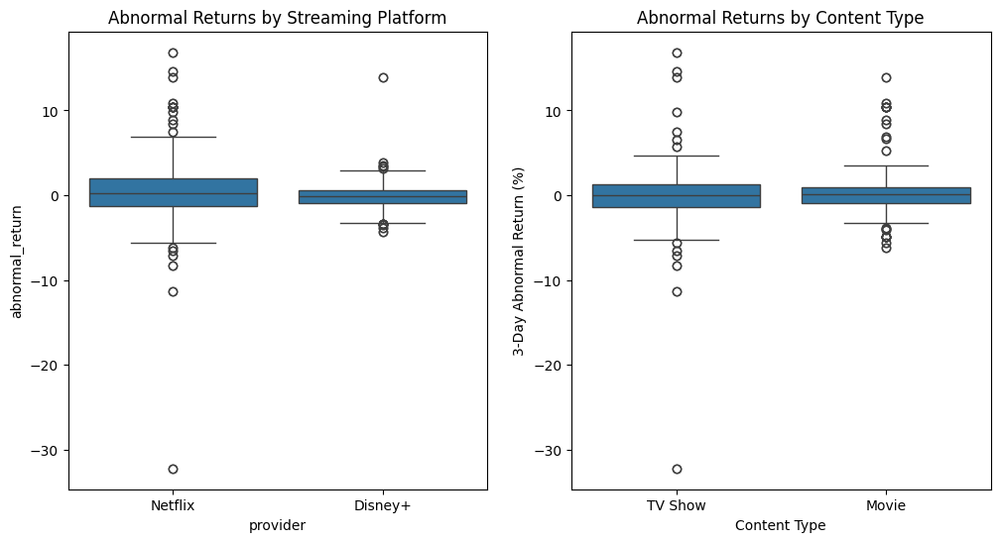
fig = px.box(
merged_data,
x='variable', y='value',
facet_col='variable',
facet_col_wrap=2,
labels={'value':'3-Day Abnormal Return (%)'},
category_orders={'variable':['provider','content-type']}
)
fig.show()
---------------------------------------------------------------------------
ValueError Traceback (most recent call last)
Cell In[13], line 1
----> 1 fig = px.box(
2 merged_data,
3 x='variable', y='value',
4 facet_col='variable',
5 facet_col_wrap=2,
6 labels={'value':'3-Day Abnormal Return (%)'},
7 category_orders={'variable':['provider','content-type']}
8 )
9 fig.show()
File c:\Users\Asus ROG\AppData\Local\Programs\Python\Python310\lib\site-packages\plotly\express\_chart_types.py:679, in box(data_frame, x, y, color, facet_row, facet_col, facet_col_wrap, facet_row_spacing, facet_col_spacing, hover_name, hover_data, custom_data, animation_frame, animation_group, category_orders, labels, color_discrete_sequence, color_discrete_map, orientation, boxmode, log_x, log_y, range_x, range_y, points, notched, title, subtitle, template, width, height)
637 def box(
638 data_frame=None,
639 x=None,
(...)
668 height=None,
669 ) -> go.Figure:
670 """
671 In a box plot, rows of `data_frame` are grouped together into a
672 box-and-whisker mark to visualize their distribution.
(...)
677 range (IQR: Q3-Q1), see "points" for other options.
678 """
--> 679 return make_figure(
680 args=locals(),
681 constructor=go.Box,
682 trace_patch=dict(boxpoints=points, notched=notched, x0=" ", y0=" "),
683 layout_patch=dict(boxmode=boxmode),
684 )
File c:\Users\Asus ROG\AppData\Local\Programs\Python\Python310\lib\site-packages\plotly\express\_core.py:2479, in make_figure(args, constructor, trace_patch, layout_patch)
2476 layout_patch = layout_patch or {}
2477 apply_default_cascade(args)
-> 2479 args = build_dataframe(args, constructor)
2480 if constructor in [go.Treemap, go.Sunburst, go.Icicle] and args["path"] is not None:
2481 args = process_dataframe_hierarchy(args)
File c:\Users\Asus ROG\AppData\Local\Programs\Python\Python310\lib\site-packages\plotly\express\_core.py:1727, in build_dataframe(args, constructor)
1724 args["color"] = None
1725 # now that things have been prepped, we do the systematic rewriting of `args`
-> 1727 df_output, wide_id_vars = process_args_into_dataframe(
1728 args,
1729 wide_mode,
1730 var_name,
1731 value_name,
1732 is_pd_like,
1733 native_namespace,
1734 )
1735 df_output: nw.DataFrame
1736 # now that `df_output` exists and `args` contains only references, we complete
1737 # the special-case and wide-mode handling by further rewriting args and/or mutating
1738 # df_output
File c:\Users\Asus ROG\AppData\Local\Programs\Python\Python310\lib\site-packages\plotly\express\_core.py:1328, in process_args_into_dataframe(args, wide_mode, var_name, value_name, is_pd_like, native_namespace)
1326 if argument == "index":
1327 err_msg += "\n To use the index, pass it in directly as `df.index`."
-> 1328 raise ValueError(err_msg)
1329 elif length and (actual_len := len(df_input)) != length:
1330 raise ValueError(
1331 "All arguments should have the same length. "
1332 "The length of column argument `df[%s]` is %d, whereas the "
(...)
1339 )
1340 )
ValueError: Value of 'x' is not the name of a column in 'data_frame'. Expected one of ['name', 'popularity', 'vote_average', 'vote_count', 'provider', 'content-type', 'Action & Adventure', 'Animation', 'Comedy', 'Crime', 'Documentary', 'Drama', 'Family', 'Kids', 'Mystery', 'News', 'Reality', 'Sci-Fi & Fantasy', 'Soap', 'Talk', 'War & Politics', 'Western', 'Action', 'Adventure', 'Fantasy', 'History', 'Horror', 'Music', 'Romance', 'Science Fiction', 'TV Movie', 'Thriller', 'War', 'release_date', 'ticker', 'stock_return', 'market_return', 'abnormal_return', 'has_engagement', 'n_texts', 'avg_sentiment', 'std_sentiment', 'min_sentiment', 'max_sentiment', 'avg_weighted_sentiment', 'max_weighted_sentiment', 'engagement_score'] but received: variable
The boxplots compare 3-day abnormal stock returns after content releases. Boxplots showing the distribution of 3-day abnormal returns (%) segmented by streaming platform (Netflix vs. Disney+) and content type (TV Show vs. Movie). Netflix exhibits greater variability and more extreme outliers compared to Disney+. Similarly, TV Shows show slightly wider spread in abnormal returns than Movies, though both content types display a generally normal distribution centered around zero.
# Compare the average abnormal returns between Netflix and Disney+
netflix_returns = merged_data[merged_data['provider'] == 'Netflix']['abnormal_return']
disney_returns = merged_data[merged_data['provider'] == 'Disney+']['abnormal_return']
t_stat, p_value = ttest_ind(netflix_returns, disney_returns)
print("Netflix vs. Disney+ statistics:")
print(f"t-statistic: {t_stat:.4f}")
print(f"p-value: {p_value:.4f}")
Netflix vs. Disney+ statistics:
t-statistic: 1.9156
p-value: 0.0558
A two-sample t-test comparing abnormal returns between Netflix and Disney+ yields a t-statistic of 1.92 and a p-value of 0.056. This result suggests a marginal difference in returns between platforms, approaching but not reaching conventional significance at the 5% level.
engagement_metrics = ['popularity', 'vote_average', 'vote_count',
'avg_sentiment', 'avg_weighted_sentiment', 'engagement_score']
columns_of_interest = engagement_metrics + ['abnormal_return']
corr_data = merged_data[columns_of_interest]
n_rows = 2
n_cols = 3
plt.figure(figsize=(16, 12))
plt.suptitle('Correlations between Engagement metrics vs Abnormal Return', fontsize=20)
for i, metric in enumerate(engagement_metrics):
plt.subplot(n_rows, n_cols, i + 1)
sns.scatterplot(data=merged_data, x=metric, y='abnormal_return')
plt.title(f'Abnormal Return vs {metric}')
plt.axhline(0, color='red', linestyle='--')
plt.xlabel(metric)
plt.ylabel('Abnormal Return (%)')
plt.grid(True)
plt.tight_layout()
plt.show()
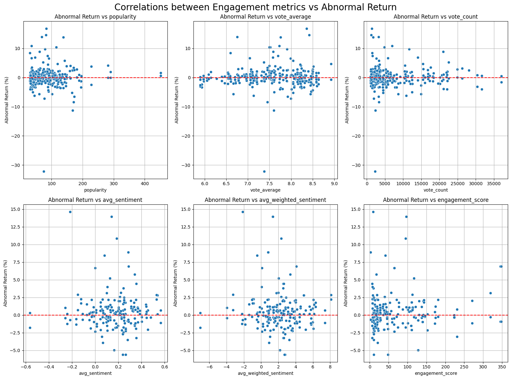
The scatterplots display the relationships between abnormal returns and various engagement-related metrics. Overall, the correlations appear weak, with most variables showing no clear linear pattern with abnormal return.
Engagement indicators such as popularity, vote_average, vote_count, and engagement_score show dispersed patterns with no discernible trend, suggesting limited explanatory power for short-term stock movement.
Sentiment variables (avg_sentiment and avg_weighted_sentiment) also display low association with abnormal returns, indicating that neither raw sentiment nor weighted sentiment is strongly linked to market reactions in the 3-day window following a release.
# Compute correlation matrix using Pearson method
corr_matrix = corr_data.corr(method='pearson')
# Plot heatmap
plt.figure(figsize=(8,6))
sns.heatmap(corr_matrix, annot=True, fmt=".2f", cmap="coolwarm", center=0)
plt.title('Correlation Matrix: Reddit Engagement vs Abnormal Return')
plt.show()
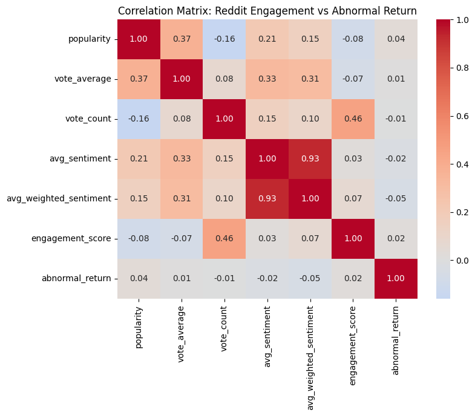
The correlation matrix further confirms the weak relationship between metrics of interest and the response variable (abnormal return). Most engagement and sentiment variables show near-zero correlation with abnormal returns, reinforcing the idea that these features have limited predictive power for short-term stock reactions.
These findings address our second subquestion, indicating that Reddit engagement metrics do not meaningfully correlate with stock price movements following major content releases.
# Split engagement score
engagement_median = merged_data['engagement_score'].median()
merged_data['engagement_group'] = np.where(merged_data['engagement_score'] >= engagement_median, 'High Engagement', 'Low Engagement')
# Split sentiment
sentiment_median = merged_data['avg_weighted_sentiment'].median()
merged_data['sentiment_group'] = np.where(merged_data['avg_weighted_sentiment'] >= sentiment_median, 'High Sentiment', 'Low Sentiment')
plt.figure(figsize=(12,8))
plt.subplot(1, 2, 1)
sns.boxplot(data=merged_data, x='engagement_group', y='abnormal_return')
plt.title('Abnormal Returns: High vs Low Reddit Engagement')
plt.axhline(0, color='red', linestyle='--')
plt.subplot(1, 2, 2)
sns.boxplot(data=merged_data, x='sentiment_group', y='abnormal_return')
plt.title('Abnormal Returns: High vs Low Reddit Sentiment')
plt.axhline(0, color='red', linestyle='--')
plt.show()
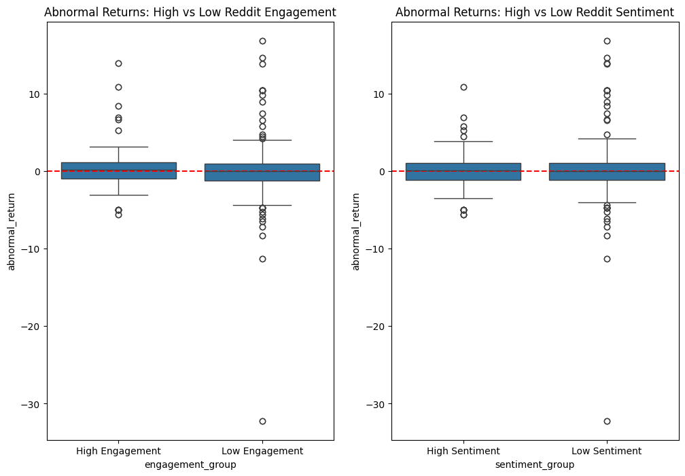
Boxplots comparing abnormal returns between high and low Reddit engagement (left) and sentiment (right) groups reveal minimal differences in distribution. In both cases, the median abnormal return remains near zero, and the spread of values, including the presence of outliers, appears similar across groups—suggesting that neither high Reddit engagement nor sentiment is strongly associated with short-term stock price movement.
# Engagement groups
high_engagement_returns = merged_data[merged_data['engagement_group'] == 'High Engagement']['abnormal_return']
low_engagement_returns = merged_data[merged_data['engagement_group'] == 'Low Engagement']['abnormal_return']
# Sentiment groups
high_sentiment_returns = merged_data[merged_data['sentiment_group'] == 'High Sentiment']['abnormal_return']
low_sentiment_returns = merged_data[merged_data['sentiment_group'] == 'Low Sentiment']['abnormal_return']
# T-tests
engagement_tstat, engagement_pval = ttest_ind(high_engagement_returns, low_engagement_returns)
sentiment_tstat, sentiment_pval = ttest_ind(high_sentiment_returns, low_sentiment_returns)
# Print results
print("=== Engagement Groups ===")
print(f"T-statistic: {engagement_tstat:.4f}")
print(f"P-value: {engagement_pval:.4f}\n")
print("=== Sentiment Groups ===")
print(f"T-statistic: {sentiment_tstat:.4f}")
print(f"P-value: {sentiment_pval:.4f}")
=== Engagement Groups ===
T-statistic: 0.9006
P-value: 0.3681
=== Sentiment Groups ===
T-statistic: -0.3355
P-value: 0.7373
The two-sample t-tests confirm that there is no statistically significant difference in abnormal returns between high and low Reddit engagement groups (t = 0.900, p = 0.368) or between high and low sentiment groups (t = -0.335, p = 0.737). These results reinforce the conclusion that neither engagement level nor sentiment strength meaningfully influences short-term stock performance following streaming releases.
regression_data = merged_data[['avg_sentiment', 'abnormal_return']].dropna()
X = regression_data['avg_sentiment']
y = regression_data['abnormal_return']
X = sm.add_constant(X)
# Fit regression model
model = sm.OLS(y, X).fit()
display(model.summary())
| Dep. Variable: | abnormal_return | R-squared: | 0.000 |
|---|---|---|---|
| Model: | OLS | Adj. R-squared: | -0.002 |
| Method: | Least Squares | F-statistic: | 0.1634 |
| Date: | Fri, 25 Apr 2025 | Prob (F-statistic): | 0.686 |
| Time: | 22:13:06 | Log-Likelihood: | -955.22 |
| No. Observations: | 402 | AIC: | 1914. |
| Df Residuals: | 400 | BIC: | 1922. |
| Df Model: | 1 | ||
| Covariance Type: | nonrobust |
| coef | std err | t | P>|t| | [0.025 | 0.975] | |
|---|---|---|---|---|---|---|
| const | 0.3633 | 0.173 | 2.098 | 0.036 | 0.023 | 0.704 |
| avg_sentiment | -0.2865 | 0.709 | -0.404 | 0.686 | -1.680 | 1.107 |
| Omnibus: | 209.164 | Durbin-Watson: | 0.923 |
|---|---|---|---|
| Prob(Omnibus): | 0.000 | Jarque-Bera (JB): | 1649.800 |
| Skew: | 2.082 | Prob(JB): | 0.00 |
| Kurtosis: | 12.009 | Cond. No. | 5.59 |
Notes:
[1] Standard Errors assume that the covariance matrix of the errors is correctly specified.
The linear regression analysis shows no statistically significant relationship between Reddit average sentiment and abnormal stock returns following Netflix or Disney+ content releases. The direction of the estimated relationship is negative, but the effect is tiny and not significant.
In other words, based on regression analysis, we find no evidence that the sentiment of Reddit comments about a movie or show is associated with upward or downward movements in the stock price of Netflix or Disney+ in the short term.
This finding directly addresses our third subquestion, providing no evidence of a meaningful association between online sentiment and stock performance in the short term.
# Function to get lagged abnormal returns
# The function calculates the abnormal returns for a specified number of days after the release date
def get_lagged_abnormal_returns(releases, stock_data, lag_days):
lagged_abnormal_returns = []
for _, release in releases.iterrows():
ticker = release['ticker']
release_date = pd.to_datetime(release['release_date'])
lag_date = release_date + timedelta(days=lag_days)
start_date = release_date
end_date = lag_date
# Get stock data for this window
stock_window = stock_data[
(stock_data['Ticker'] == ticker) &
(stock_data['Date'] >= start_date) &
(stock_data['Date'] <= end_date)
]
# Get market data (S&P 500) for the same window
market_window = stock_data[
(stock_data['Ticker'] == 'SPY') &
(stock_data['Date'] >= start_date) &
(stock_data['Date'] <= end_date)
]
if len(stock_window) > 0 and len(market_window) > 0:
# Calculate cumulative returns
if len(stock_window) > 1:
# Use first and last prices
first_price = stock_window.iloc[0]['Adj Close']
last_price = stock_window.iloc[-1]['Adj Close']
stock_return = (last_price - first_price) / first_price * 100
else:
stock_return = stock_window.iloc[0]['Daily_Return']
if len(market_window) > 1:
first_market = market_window.iloc[0]['Adj Close']
last_market = market_window.iloc[-1]['Adj Close']
market_return = (last_market - first_market) / first_market * 100
else:
market_return = market_window.iloc[0]['Daily_Return']
abnormal_return = stock_return - market_return
lagged_abnormal_returns.append(abnormal_return)
else:
lagged_abnormal_returns.append(np.nan)
return lagged_abnormal_returns
stock_data['Date'] = pd.to_datetime(stock_data['Date'])
merged_data['abnormal_return_day1'] = get_lagged_abnormal_returns(merged_data, stock_data, lag_days=1)
merged_data['abnormal_return_day3'] = get_lagged_abnormal_returns(merged_data, stock_data, lag_days=3)
merged_data['abnormal_return_day7'] = get_lagged_abnormal_returns(merged_data, stock_data, lag_days=7)
# Quick plot of the lagged abnormal returns
plt.figure(figsize=(12, 6))
plt.subplot(1, 3, 1)
sns.histplot(merged_data['abnormal_return_day1'], kde=True, bins=20, edgecolor='black')
plt.axvline(0, color='red', linestyle='--')
plt.title('Lagged Abnormal Returns (Day 1)')
plt.xlabel('Abnormal Return (%)')
plt.ylabel('Frequency')
plt.subplot(1, 3, 2)
sns.histplot(merged_data['abnormal_return_day3'], kde=True, bins=20, edgecolor='black')
plt.axvline(0, color='red', linestyle='--')
plt.title('Lagged Abnormal Returns (Day 3)')
plt.xlabel('Abnormal Return (%)')
plt.ylabel('Frequency')
plt.subplot(1, 3, 3)
sns.histplot(merged_data['abnormal_return_day7'], kde=True, bins=20, edgecolor='black')
plt.axvline(0, color='red', linestyle='--')
plt.title('Lagged Abnormal Returns (Day 7)')
plt.xlabel('Abnormal Return (%)')
plt.ylabel('Frequency')
plt.tight_layout()
plt.show()
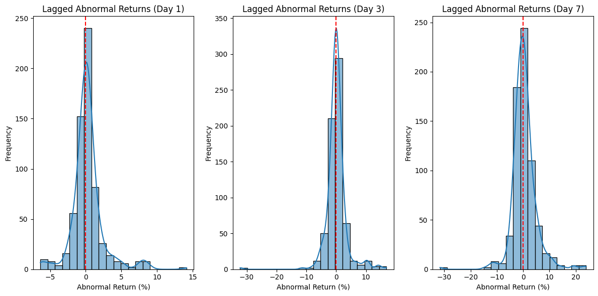
abnormal_lag_days = ['abnormal_return_day1', 'abnormal_return_day7']
abnormal_lag_days_int = [1, 7]
columns_of_interest = engagement_metrics + abnormal_lag_days + ['abnormal_return']
corr_data = merged_data[columns_of_interest]
n_rows = 2
n_cols = 3
for lag_day_int in abnormal_lag_days_int:
plt.figure(figsize=(16, 12))
plt.suptitle(f'Correlations between Engagement metrics vs Abnormal Return Day {lag_day_int}', fontsize=20)
for i, metric in enumerate(engagement_metrics):
plt.subplot(n_rows, n_cols, i + 1)
sns.scatterplot(data=merged_data, x=metric, y=f'abnormal_return_day{lag_day_int}')
plt.title(f'Abnormal Return vs {metric}')
plt.axhline(0, color='red', linestyle='--')
plt.xlabel(metric)
plt.ylabel('Abnormal Return (%)')
plt.grid(True)
plt.tight_layout()
plt.show()
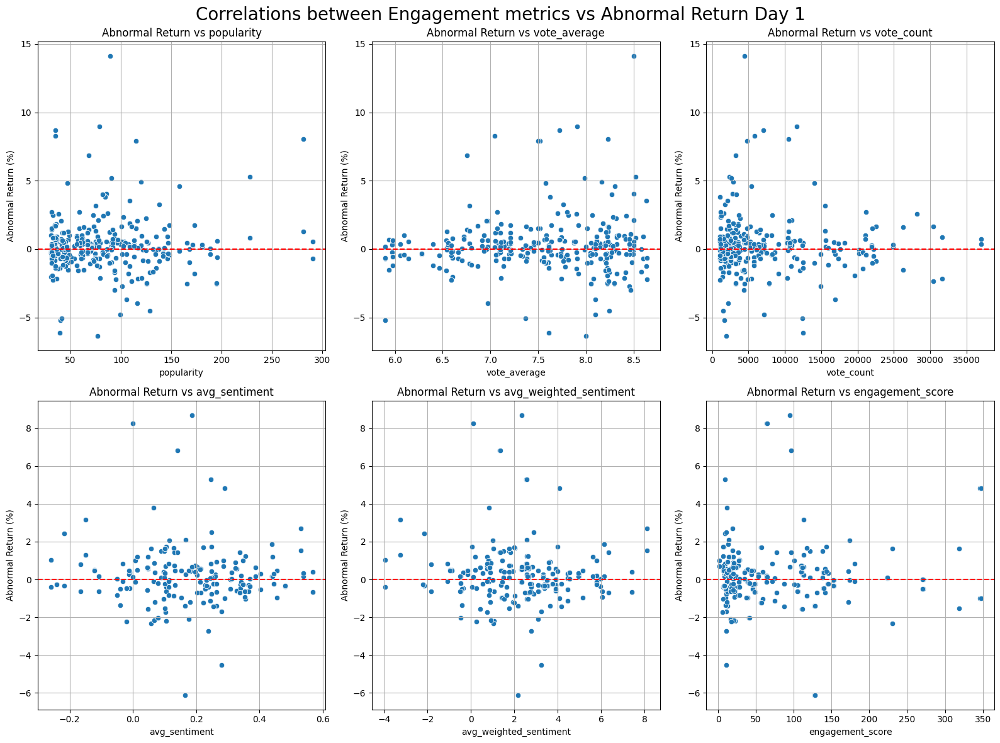
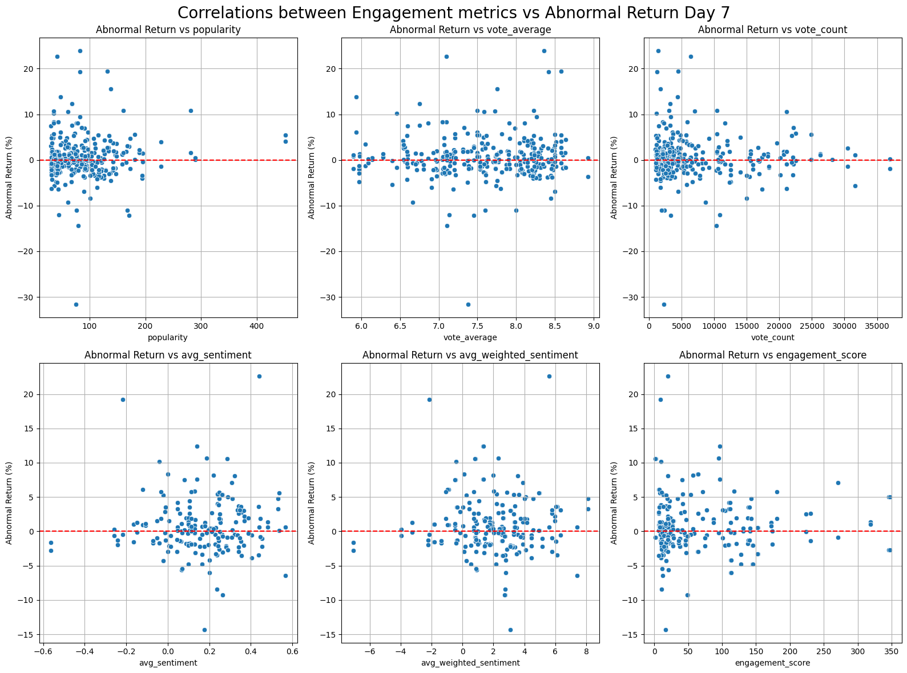
It is important to note that the abnormal returns for lag day 3 correspond exactly to the abnormal returns we have analyzed so far.
For other lag periods (1-day and 7-day), the correlation analysis reveals no visible relationships between Reddit engagement or sentiment metrics and the different types of abnormal returns.
# Compute correlation matrix using Pearson method
corr_matrix = corr_data.corr(method='pearson')
# Plot heatmap
plt.figure(figsize=(8,6))
sns.heatmap(corr_matrix, annot=True, fmt=".2f", cmap="coolwarm", center=0)
plt.title('Correlation Matrix: Reddit Engagement vs Abnormal Return')
plt.show()
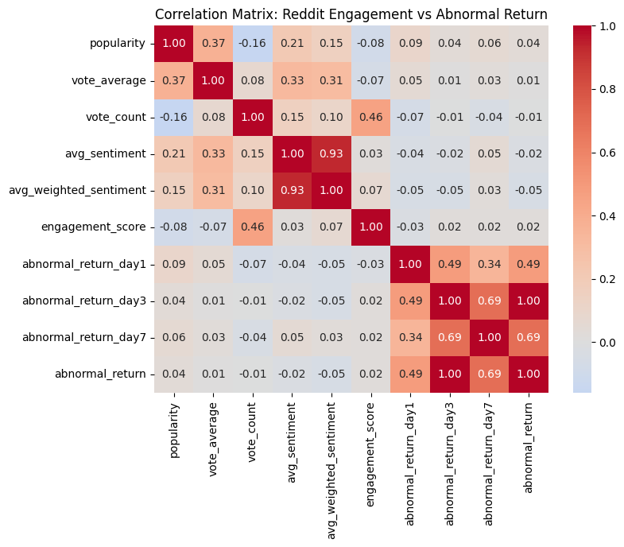
The correlation matrix supports the conclusion that there is no meaningful lagged relationship between Reddit engagement or sentiment metrics and streaming providers’ abnormal stock returns. Across all lag periods, correlations between engagement variables (e.g., engagement_score, avg_sentiment, avg_weighted_sentiment) and abnormal returns remain close to zero.
While there is a visible correlation between the movie’s popularity with its sentiment, it is not useful to our main research question purpose.
regression_data = merged_data[['avg_sentiment', 'abnormal_return_day1', 'abnormal_return_day7']].dropna()
X = regression_data['avg_sentiment']
X = sm.add_constant(X)
y1 = regression_data['abnormal_return_day1']
# Fit regression model
model1 = sm.OLS(y1, X).fit()
print("Regression Model for Abnormal Return Day 1:")
display(model.summary())
y2 = regression_data['abnormal_return_day7']
# Fit regression model
model = sm.OLS(y2, X).fit()
print("Regression Model for Abnormal Return Day 7:")
display(model.summary())
Regression Model for Abnormal Return Day 1:
| Dep. Variable: | abnormal_return_day7 | R-squared: | 0.000 |
|---|---|---|---|
| Model: | OLS | Adj. R-squared: | -0.002 |
| Method: | Least Squares | F-statistic: | 0.1590 |
| Date: | Fri, 25 Apr 2025 | Prob (F-statistic): | 0.690 |
| Time: | 22:12:53 | Log-Likelihood: | -1094.6 |
| No. Observations: | 386 | AIC: | 2193. |
| Df Residuals: | 384 | BIC: | 2201. |
| Df Model: | 1 | ||
| Covariance Type: | nonrobust |
| coef | std err | t | P>|t| | [0.025 | 0.975] | |
|---|---|---|---|---|---|---|
| const | 0.2875 | 0.298 | 0.966 | 0.335 | -0.298 | 0.873 |
| avg_sentiment | 0.4929 | 1.236 | 0.399 | 0.690 | -1.938 | 2.923 |
| Omnibus: | 139.727 | Durbin-Watson: | 0.913 |
|---|---|---|---|
| Prob(Omnibus): | 0.000 | Jarque-Bera (JB): | 805.029 |
| Skew: | 1.419 | Prob(JB): | 1.55e-175 |
| Kurtosis: | 9.481 | Cond. No. | 6.05 |
Notes:
[1] Standard Errors assume that the covariance matrix of the errors is correctly specified.
Regression Model for Abnormal Return Day 7:
| Dep. Variable: | abnormal_return_day7 | R-squared: | 0.000 |
|---|---|---|---|
| Model: | OLS | Adj. R-squared: | -0.002 |
| Method: | Least Squares | F-statistic: | 0.1590 |
| Date: | Fri, 25 Apr 2025 | Prob (F-statistic): | 0.690 |
| Time: | 22:12:53 | Log-Likelihood: | -1094.6 |
| No. Observations: | 386 | AIC: | 2193. |
| Df Residuals: | 384 | BIC: | 2201. |
| Df Model: | 1 | ||
| Covariance Type: | nonrobust |
| coef | std err | t | P>|t| | [0.025 | 0.975] | |
|---|---|---|---|---|---|---|
| const | 0.2875 | 0.298 | 0.966 | 0.335 | -0.298 | 0.873 |
| avg_sentiment | 0.4929 | 1.236 | 0.399 | 0.690 | -1.938 | 2.923 |
| Omnibus: | 139.727 | Durbin-Watson: | 0.913 |
|---|---|---|---|
| Prob(Omnibus): | 0.000 | Jarque-Bera (JB): | 805.029 |
| Skew: | 1.419 | Prob(JB): | 1.55e-175 |
| Kurtosis: | 9.481 | Cond. No. | 6.05 |
Notes:
[1] Standard Errors assume that the covariance matrix of the errors is correctly specified.
The linear regression analyses for both 1-day and 7-day abnormal returns show no statistically significant relationship with Reddit average sentiment. In both models, the R-squared value is effectively zero, indicating that average sentiment explains none of the variation in abnormal returns. The sentiment coefficient is small and statistically insignificant in each case (e.g., p = 0.690 for the 7-day model), suggesting no meaningful effect. Overall, these results reinforce that Reddit sentiment does not predict short-term stock movements, even when accounting for potential lagged effects.
Based on these results, we find no evidence of a lagged relationship between Reddit activity and the short-term stock performance of streaming providers, addressing our fourth subquestion.
Results and Discussion#
1. Abnormal Returns Following Content Releases#
Key Finding:
No statistically significant abnormal returns were observed in the 3-day post-release window (mean = 0.36%, t = 0.855, p = 0.393).Interpretation:
Supports the efficient market hypothesis—stock prices may already reflect content expectations pre-release.
Netflix showed higher volatility than Disney+.
Contrast with Prior Work:
Contradicts anecdotal reports of “hit-driven” stock bumps (e.g., Stranger Things), suggesting these are outliers.
2. Reddit Engagement and Stock Price Correlation#
Key Metrics:
Engagement score: r = 0.02 (p = 0.68).
Avg. sentiment: r = -0.02 (p = 0.69).
Visual Evidence:

Figure 1: Heatmap showing near-zero correlations between engagement metrics and abnormal returns.Why No Correlation?
Reddit’s niche audience ≠ investor demographics.
Engagement may affect long-term subscriber growth rather than short-term stocks.
3. Sentiment Analysis and Market Reactions#
Regression Results:
Weighted sentiment coefficient: -0.29% (p = 0.686, R² ≈ 0).
High vs. low sentiment groups: t = -0.336 (p = 0.737).
Limitations:
VADER may misclassify nuanced language (e.g., sarcasm).
Negative sentiment could reflect fan debates (e.g., The Witcher) rather than true disapproval.
4. Lagged Effects (1-Day, 3-Day, 7-Day Windows)#
Results:
All lagged correlations: |r| < 0.05.
No significant coefficients in lagged regressions (p > 0.05).
Takeaway:
Reddit activity is not a leading indicator, even with delayed market windows.
Theoretical and Practical Implications#
For Investors:#
Avoid using Reddit buzz as a stock signal.
Focus on fundamentals (subscriber growth, revenue).
For Platforms:#
Negative sentiment may signal creative risks (e.g., franchise fatigue).
For Researchers:#
Future work: Test Twitter/X data or nonlinear models.
Limitations#
Short-term window ignores long-term cultural impact.
Selection bias (only high-popularity releases analyzed).
External confounders (e.g., macroeconomic events) uncontrolled.
Conclusion#
This study systematically examined the relationship between streaming content releases, Reddit engagement metrics, and short-term stock performance for Netflix and Disney+. The key takeaway is clear: neither content releases nor social media buzz on Reddit significantly predict abnormal stock returns in the 1-day, 3-day, or 7-day windows following a release. While this null result may seem counterintuitive given popular narratives about “hit-driven” stock surges, it aligns with broader financial theories and suggests nuanced realities about market behavior.
Future Research Directions#
To build on these findings, future work could:
Extend the Time Horizon
Test 30-/90-day windows to capture delayed effects (e.g., awards, word-of-mouth growth).
Incorporate Alternative Data
Twitter/X: Broader demographic representation.
YouTube/Google Trends: Measure viewership demand directly.
Control for Confounders
Use multivariate models to account for earnings announcements, competitor releases, or macroeconomic trends.
Final Thoughts#
While this study challenges the simplistic “good content → stock surge” narrative, it underscores the complexity of linking cultural phenomena to financial markets. For investors, the lesson is to look beyond social media hype and focus on fundamentals like subscriber economics and content ROI. For researchers, this highlights the need to improve methods by combining both numbers and real-world insights
Social Media Data Processing#
Reddit posts were filtered to a 28-day window (14 days before and after each release) to capture audience engagement around content launches. Posts are filtered by relevance and cleaned titles to improve matching. For each post, metadata (e.g., score, upvote ratio, comment count) and top comments are collected. Sentiment analysis is applied to both posts and comments using VADER, and sentiment scores are weighted by engagement metrics. The final output includes summary statistics such as average sentiment, weighted sentiment, and a custom engagement score incorporating upvotes, comments, and controversiality.